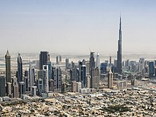

Economy of the United Arab Emirates
|  Dubai, the financial center of the United Arab Emirates | |
| Currency | Emirati dirham (AED, د.إ) |
|---|---|
| US$1 = 3.6725 AED | |
| Calendar year | |
Trade organisations | OPEC, WTO, GCC, BRICS |
Country group |
|
| Statistics | |
| Population | 9,441,129 (2022)[4] |
| GDP | |
| GDP rank | |
GDP growth | |
GDP per capita | |
GDP per capita rank | |
GDP by sector |
|
Population below poverty line | N/A |
| 26.0 low (2018)[7] | |
| |
Labour force | |
Labour force by occupation |
|
| Unemployment | |
Main industries | |
| External | |
| Exports | |
Export goods | Crude oil, refined petroleum, gold, reexports, telecommunications equipment, diamonds, petroleum gas, jewellery, aluminium (2021)[12] |
Main export partners | |
| Imports | |
Import goods | Gold, food, machinery, transport vehicles and parts, refined petroleum, natural gas, diamonds, jewellery, refined copper (2021)[12] |
Main import partners |
|
FDI stock | |
Gross external debt | |
| Public finances | |
| −0.2% (of GDP) (2017 est.)[6] | |
| Revenues | 15.79 billion (2021 est.)[6] |
| Expenses | 16.6 billion (2021 est.)[6][note 1] |
| Standard & Poor's: AA[14] Outlook: Stable Moody's: Aa2 Outlook: Stable Fitch: AA Outlook: Stable | |
All values, unless otherwise stated, are in US dollars. | |
.jpg){kind=link}
The United Arab Emirates is a high-income developing market economy. The UAE's economy is the 4th largest in the Middle East (after Turkey, Saudi Arabia and Israel), with a gross domestic product (GDP) of US$415 billion (AED 1.83 trillion) in 2021-2023.[5]
The UAE economy is heavily reliant on revenues from petroleum and natural gas, especially in Abu Dhabi. In 2009, more than 85% of the UAE's economy was based on the oil exports.[15][16] In 2011, oil exports accounted for 77% of the UAE's state budget.[17] In recent years, there has been some economic diversification,[18] particularly in Dubai.[19] Abu Dhabi and other UAE emirates have remained relatively conservative in their approach to diversification. Dubai has far smaller oil reserves than its counterparts.[20]
Tourism is one of the biggest non-oil sources of revenue in the UAE. A massive construction boom, an expanding manufacturing base, and a thriving services sector are helping the country to diversify its economy. Nationwide, there is currently US $350 billion worth of active construction projects.[21]
The UAE is a member of the World Trade Organization and OPEC.
Economic overview
[edit]UAE has the second-largest economy in the Arab world (after Saudi Arabia),[22] with a gross domestic product (GDP) of US$414 billion (AED 1.52 trillion) in 2018.[23] A third of the GDP is from oil revenues.[22] The economy was expected to grow 4–4.5% in 2013, compared to 2.3–3.5% over the previous five years. Since independence in 1971, UAE's economy has grown by nearly 231 times to AED1.45 trillion in 2013. The non-oil trade has grown to AED1.2 trillion, a growth of around 28 times from 1981 to 2012.[22]
The UAE's economy is one of the most open worldwide, and its economic history goes back to the times when ships sailed to India, along the Swahili coast, as far south as Mozambique.[24]
International Monetary Fund (IMF) expected UAE's economic growth to increase to 4.5% in 2015, compared to 4.3% in 2014. The IMF ascribed UAE's potentially strong economic growth in World Economic Outlook Report to the increased contribution of non-petroleum sectors, which registered a growth average of more than 6% in 2014 and 2015. Such contribution includes banking, tourism, commerce and real estate. Increase of Emirati purchasing power and governmental expenditures in infrastructure projects have considerably increased.[citation needed]
Internationally, UAE is ranked among the top 20 for global service business, according to AT Kearney, the top 30 on the WEF "most-networked countries" and in the top quarter as a least corrupt country per the TI's corruption index.[25]
The government of the United Arab Emirates announced a broad restructuring and merger of more than 50% of its federal agencies, including ministries and departments, in an attempt to deal with and recover from the economic shocks following months-long coronavirus lockdown.[26]
Historical background
[edit]Before independence from the United Kingdom and unification in 1971, each emirate was responsible for its own economy. At the time, pearl diving, seafaring and fishing were together the mainstay of the economy, until the development of Japanese cultured pearls and the discovery of commercial quantities of oil.[27] Previous UAE President Zayed Bin Sultan Al Nahyan is credited with bringing the country forward into the 20th century and using the revenue from oil exports to fund all the necessary development. Likewise, former UAE vice-president Rashid bin Saeed Al Maktoum had a bold vision for the Emirate of Dubai and foresaw the future in not petroleum alone, but also other industries.[28]
In the 1980s Dubai's diversification centred around trade and the creation of shipping and logistics centres, notably Port Rashid and the port and Free Zone of Jebel Ali as well as Dubai International Airport,[29] leading to a number of major global plays in shipping, transportation and logistics (DP World, Emirates, DNATA).
Recent history
[edit]The emergence of Dubai's lively real estate market was briefly checked by the global financial crisis of 2007–8, when Dubai was bailed out by Abu Dhabi.[30] The recovery from the overheated market led to tighter regulation and oversight and a more realistic market for real estate throughout the UAE with many 'on hold' projects restarting. Although the market continues to expand, current market conditions for developers have been characterised as 'tough'.[31]
As a result of COVID-19 pandemic, the UAE’s economy shrank by 6.1% in 2020.[32] The country’s account balance dropped to six per cent of GDP in 2020 from 8.5 per cent in 2019 due to the underperformance of both hydrocarbon and non-hydrocarbon exports mitigated by lower imports.[33]
In late 2021, the authority announced that UAE’s banking assets are expected to grow by between 8 per cent and 10 per cent in 2022 as the second-biggest Arab economy continues to recover from the covid-19 pandemic.[34] It was also announced the UAE’s economy might grow at a faster than projected rate, reaching 4.6% in 2022.[35]
Data
[edit]The following table shows the main economic indicators in 1980–2024 (with IMF estimates between 2022-2028).[36]
| Year | GDP
(Bil. US$ nomina) |
GDP per capita
(US$ nominal) |
GDP
(Bil. US$, PPP) |
GDP per capita
(US$, PPP) |
GDP growth
(real) |
Inflation rate | Government debt
(% of GDP) |
|---|---|---|---|---|---|---|---|
| 1980 | 41.7 | 41,312 | 89.3 | 88,437 | -1.8% | 10.1% | n/a |
| 1985 | n/a | ||||||
| 1990 | n/a | ||||||
| 1995 | n/a | ||||||
| 2000 | 3.1% | ||||||
| 2005 | |||||||
| 2006 | |||||||
| 2007 | |||||||
| 2008 | |||||||
| 2009 | |||||||
| 2010 | |||||||
| 2011 | |||||||
| 2012 | |||||||
| 2013 | |||||||
| 2014 | |||||||
| 2015 | |||||||
| 2016 | |||||||
| 2017 | |||||||
| 2018 | |||||||
| 2019 | |||||||
| 2020 | |||||||
| 2021 | |||||||
| 2022 | |||||||
| 2023e | |||||||
| 2024e | |||||||
| 2025f | 2.0% | ||||||
| 2026f | |||||||
| 2027f | |||||||
| 2028f |
External trade
[edit]{kind=link}
With imports totaling $273.5 billion in 2012, UAE passed Saudi Arabia as the largest consumer market in the region. Exports totaled $314 billion, making UAE the second largest exporter in the region.[22]
UAE and India are each other's main trading partners, with the latter having many of its citizens working and living in the former. The trade totals over $75 billion (AED275.25 billion).[37]
In 2021, the main export partners of the UAE were India (14.2%), Japan (8.3%), China (mainland) (7.7%), Saudi Arabia (7.5%), Iraq (4.8%), Singapore (4.0%), the European Union (4.0%), Oman (3.8%), Hong Kong (3.4%), and Thailand (3.0%).[13]
The main import partners in 2012 were China (17.3%), the European Union (12.1%), India (9.4%), the United States (5.5%), Saudi Arabia (5.2%), the United Kingdom (2.8%), Mali (2.7%), Japan (2.6%), Turkey (2.1%), and Vietnam (2.0%).[13]
Diversification of UAE's economy
[edit]Although UAE has the most diversified economy in the GCC, the UAE's economy remains extremely reliant on oil.[38] With the exception of Dubai, most of the UAE is dependent on oil revenues. Petroleum and natural gas continue to play a central role in the economy, especially in Abu Dhabi. More than 85% of the UAE's economy was based on the oil exports in 2009.[15][16] While Abu Dhabi and other UAE emirates have remained relatively conservative in their approach to diversification, Dubai, which has far smaller oil reserves, was bolder in its diversification policy.[20] In 2011, oil exports accounted for 77% of the UAE's state budget.[17]
Dubai suffered from a significant economic crisis in 2007–2010 and was bailed out by Abu Dhabi's oil wealth. Dubai's current prosperity has been attributed to Abu Dhabi's petrodollars.[39] In 2014, Dubai owed a total of $142 billion in debt.[40] The UAE government has worked towards reducing the economy's dependence on oil exports by 2030.[41] Various projects are underway to help achieve this, the most recent being the Khalifa Port, opened in the Emirate of Abu Dhabi at the end of 2012. The UAE has also won the right to host the World Expo 2020, which is believed to have a positive effect on future growth, although there are some skeptics which mention the opposite.[42]
Over the decades, the Emirate of Dubai has started to look for additional sources of revenue. High-class tourism and international finance continue to be developed. In line with this initiative, the Dubai International Financial Centre was announced, offering 55.5% foreign ownership, no withholding tax, freehold land and office space and a tailor-made financial regulatory system with laws taken from best practice in other leading financial centers like New York, London, Zürich and Singapore.[citation needed] A new stock market for regional companies and other initiatives were announced in DIFC. Dubai has also developed Internet and Media free zones, offering 100% foreign ownership, no tax office space for the world's leading ICT and media companies, with the latest communications infrastructure to service them. Many of the world's leading companies have now set up branch offices, and even changed headquarters to, there. Recent liberalization in the property market allowing non citizens to buy freehold land has resulted in a major boom in the construction and real estate sectors, with several signature developments such as the 2 Palm Islands, the World (archipelago), Dubai Marina, Jumeirah Lake Towers, and a number of other developments, offering villas and high rise apartments and office space. Emirates (part of the Emirates Group) was formed by the Dubai Government in the 1980s and is presently one of the few airlines to witness strong levels of growth. Emirates is also the largest operator of the Airbus A380 aircraft. As of 2001[update], budgeted government revenues were about AED 29.7 billion, and expenditures were about AED 22.9 billion. In addition, to finding new ways of sustaining the national economy, the UAE has also made progress in installing new, sustainable methods of generating electricity. This is evidenced by various solar energy initiatives at Masdar City and by other renewable energy developments in parts of the country.[43][44]
In addition, the UAE is starting to see the emergence of local manufacturing as new source of economic development, examples of significant government-led investments such as Strata in aerospace industry, under Mubadala are successful, while there are also small scale entrepreneurial ventures picking up, such as Zarooq Motors in the automotive industry.[45]
In August 2020, the Barakah nuclear power plant, the first nuclear power plant in the Arab world, became operational.[46]
In its hard push for economic diversification, the UAE had been increasing its presence in Africa. One of the areas of interest had been clean energy, for which Abu Dhabi’s Masdar built infrastructure, including five wind farms in South Africa, a battery energy storage system in Senegal and solar power facilities in Mauritania. Emirati companies were also investing in fossil fuels, where ADNOC purchased 10% stakes in Mozambique’s Rovuma gas basin. UAE’s e& also established a foothold in around 12 countries across Africa. The Emirati companies also entered the mining sector, where Tahnoun bin Zayed’s International Holding Company expressed investment interests in mines in Kenya, Tanzania and Angola. However, certain investments had also been controversial. Tanzanian authorities were alleged of forcing several Maasai off their land for a safari and hunting project of an Emirati firm. A Dubai-based firm, Blue Carbon signed preliminary agreements in Liberia, Tanzania, Kenya, Zambia and Zimbabwe, aiming to generate carbon credits. However, it was accused of attempting to acquire millions of hectares of African forests in a greenwashing attempt. Meanwhile, DP World also invested around $3bn into Africa, and is operating ports from Mozambique in the south to Algeria in the north and Angola on the Atlantic. The Emirates had also been alleged of controversial actions in the war zones in Africa, including in Libya and Sudan.[47]
Foreign trade
[edit]Concerning foreign trade, UAE's market is one of the world's most dynamic markets worldwide, placed among the 16 largest exporters and 20 largest importers of commodities.[48] The top five of the Main Partner Countries of the UAE in 2014 are Iran (3.0%), India (2.9%), Saudi Arabia (1.5%), Oman (1.4%) and Switzerland (1.2%). As for the top five of UAE suppliers are China (7.4%), United States (6.4%), India (5.8%), Germany (3.9%) and Japan (3.5%).
| Indicator | 2010 | 2011 | 2012 | 2013 | 2014 |
|---|---|---|---|---|---|
| Imports of Goods (million USD) | 165,000 | 203,000 | 226,000 | 251,000 | 262,000 |
| Exports of Goods (million USD) | 214,000 | 302,000 | 349,000 | 379,000 | 360,000 |
| Imports of Services (million USD) | 41,337 | 55,702 | 62,301 | 66,413 | 70,279 |
| Exports of Services (million USD) | 11,028 | 12,063 | 15,276 | 17,345 | 19,769 |
| Imports of Goods and Services (Annual % Change) | 2.1 | 18.8 | 5.2 | 6.5 | 6.1 |
| Exports of Goods and Services (Annual % Change) | 2.5 | 20.7 | 17.0 | 4.5 | 8.2 |
| Imports of Goods and Services (in % of GDP) | 72.2 | 72.3 | 75.3 | 76.8 | 77.9 |
| Exports of Goods and Services (in % of GDP) | 78.8 | 90.3 | 100.6 | 101.3 | 98.0 |
In 2014, the United Arab Emirates managed to export 380.4bn dominated by four products which are Petroleum oils and oils obtained from bituminous...[permanent dead link] (19.8%) Diamonds, whether or not worked, but not mounted...[permanent dead link] (3.4%) Gold in UAE(3.2%) incl. gold plated with platinum, unwrought...Articles of jewellery and parts thereof, of...[permanent dead link](2.8%). In the same year, the United Arab Emirates imported 298.6 bn dominated by five countries which are China (7.4%), United States (6.4%), India (5.8%), Germany (3.9%), Japan (3.5%).
On one hand, the United Arab Emirates managed in 2013 to export 17 bn USD services exported in 2013 dominated by travel (67.13%), transportation (28.13%), Government services (4.74%). On the other hand, it imported 63.9 bn USD of services imported services dominated by transportation (70.68%), travel (27.70%) and government services (1.62%).
In September 2021, the UAE announced its plans to aggravate its trade ties with other economies, particularly in Asia and Africa. The country indicated that it was looking for inward foreign investments of around $150 billion in the next nine years, that is, by 2030. The Emirates aimed to be one of the world’s ten biggest investment nations. However, it had to face strong competition from its neighbor, Saudi Arabia, creating a broader gap in the once-assumed alliance between the two countries. The Emirati minister of state for foreign trade said, "Let the Saudis increase the competition. It means the pie is going to be bigger and having a bigger pie means that the UAE share out of this pie is going to be bigger."[50]
The EU identified that the Emirati firms were involved in direct trade of weapon components to Russia. The EU sanctions targeted two UAE-based companies, I Jet Global and Success Aviation Services, which were exporting dual-use goods. The EU warned that countries that will be used for Russia’s benefit could face a total ban on imports from the EU military and high tech kit. Besides, a trade war with UAE was expected, if it continued trade with Russia.[51]
The United Arab Emirates has introduced significant changes to its regulations concerning the promotion and distribution of foreign investment funds within the country. As part of these changes, encapsulated in several decisions by the Securities and Commodities Authority, is that foreign-owned funds can no longer directly advertise or distribute units publicly in the UAE. Instead, these activities are confined to private distribution aimed at Professional Investors and/or Market Counterparties. This shift signifies a strategic move to tighten the circumstances under which foreign funds can interact with UAE-based investors, particularly Retail Customers and Professional Investors, underscoring a push towards a more regulated investment environment.[52]
These regulatory updates have also led to changes in the distribution to Professional Investors, as they are now no longer exempt under the Securities and Commodities Authority Rulebook. Only firms licensed by the SCA to conduct the regulated activity of "Promotion" are now permitted to promote such funds, and only on a private placement basis. Furthermore, the promotion or distribution of foreign funds to retail investors is outright prohibited, although reverse solicitation from retail investors is not prohibited in itself. All foreign funds to be distributed in the UAE must be registered with the SCA, barring those that can prove documented reverse solicitation.[53]
Three Emirati companies were found involved in trade of Iranian petroleum or petrochemical products, and were sanctioned by the US State Department in June 2024. One of the companies was Sea Route Ship Management FZE, which engaged in transport of Iranian petrochemical products as the commercial manager of the vessel ASTRA. The other two firms, Almanac Ship Management LLC and Al Anchor Ship Management FZE were involved in transport of Iranian petroleum products as the commercial manager of the vessels BERENICE PRIDE and PARINE respectively.[54]
In July 2024, Samco Petroleum Energy FZE, located in Hamriyah Free Zone, was put up for sale for $17.7 million, with a promise to provide a turnkey oil trading operation. The sale emerged amidst the US sanctions imposed on several oil traders in the UAE's free trade zones, particularly Hamriyah, for continuing business with Iran and Russia. In November 2023, OFAC sanctioned a dozen companies in various UAE’s free zones for facilitating the sale of Iranian products in third countries through Sepehr Energy, which is affiliated with Iran's Armed Forces General Staff. In March 2023, more companies operating in the UAE were sanctioned for exporting petrochemical products from Iran’s Persian Gulf Petrochemical Industries to India and Southeast Asia. The Emirati authorities were also pushed to halt Russian imports and exports via Dubai.[55]
Human Resources and Employment
[edit]Many buildings were built primarily by workers from South Asia and East Asia.[56][57] This is generally because the current generation of UAE locals prefer governmental jobs and not private sector employment.[58][59] On 17 June 2008, there were about 7,500 skilled workers employed at the Burj Khalifa construction site.[60] Press reports indicated in 2006 that skilled carpenters at the site earned £4.34 a day, and labourers earned £2.84.[56] According to a BBC investigation and a Human Rights Watch report, the workers were housed in abysmal conditions, and worked long hours for low pay.[61][62][63] During construction, only one construction-related death was reported.[64] However, workplace injuries and fatalities in the UAE are "poorly documented", according to Human Rights Watch.[61]
In March 2006 about 2,500 workers, upset over buses that were delayed for the end of their shifts, protested and triggered a riot, damaging cars, offices, computers and construction equipment.[56] A Dubai Interior Ministry official said the rioters caused almost £500,000 in damage.[56] Most of the workers involved in the riot returned the following day but refused to work.[56] Workers at Dubai airport also protested.
Emiratisation
[edit]{kind=link}
Emiratisation is an initiative by the government of the UAE to employ more UAE Nationals in a meaningful and efficient manner in the public and private sectors.[65][66] While the program has been in place for more than a decade and results can be seen in the public sector, the private sector is still lagging behind with citizens only representing 0.34% of the private sector workforce.[67]
While there is general agreement over the importance of Emiratisation for social, economic and political reasons, there is also some contention as to the impact of localization on organizational efficiency. It is yet unknown whether, and the extent to which, employment of nationals generates returns for MNEs operating in the Middle East. Recent research cautions that localization is not always advantageous for firms operating in the region, and its effectiveness depends on a number of contingent factors.[68][69]
In December 2009 however, a positive impact of UAE citizens in the workplace was identified in a newspaper article citing a yet unpublished study,[70] this advantage being the use of networks within the evolving power structures.
Overall, however, uptake in the private sector remains low regardless of significant investments in education, which have reached record levels with education now accounting for 22.5% – or $2.6 billion – of the overall budget planned for 2010.[71] Multiple governmental initiatives are actively promoting Emiratisation by training anyone from high school dropouts to graduates in a multitude of skills needed for the – essentially Western – work environment of the UAE, these initiatives include Tawteen UAE,[72] ENDP[73] or the Abu Dhabi Tawteen Council.[74]
There are very few anti-discrimination laws in relation to labour issues, with Emiratis – and other GCC nationals – being given preference when it comes to employment.[75] Unions are generally banned and workers with any labour issues are advised to be in touch with the Ministry of Labour, instead of protesting or refusing to work. Migrant employees often complain of poor workplace safety and wages based on nationality, although this is being slowly addressed.[76]
Beyond directly sponsoring educational initiatives, the Emirates Foundation for Philanthropy[77] is funding major research initiatives into Emiratisation through competitive research grants, allowing universities such as United Arab Emirates University or Dubai School of Government to build and disseminate expertise on the topic.
Academics working on various aspects of Emiratisation include Paul Dyer[12] and Natasha Ridge from Dubai School of Government, Ingo Forstenlechner[13] from United Arab Emirates University, Kasim Randaree from the British University of Dubai and Paul Knoglinger from the FHWien.
In 2020, economy of the United Arab Emirates became vulnerable to the COVID-19 pandemic, witnessing an economic shutdown. Among the Emirates, Dubai was facing extreme situation, where the expat workers were left jobless. Thousands of the Britons working in the city started selling off their possessions to collect money, as the strict visa regulations forced them to return to the UK.[78]
According to an April 2021 report published by the Democracy Centre for Transparency on the Discrimination against foreigners and expatriates living in the UAE versus Emirati citizens, despite labor reforms in the UAE, foreigners and skilled or unskilled migrant workers face discrimination and racialization[clarification needed] from the citizens of the country. Foreigners and expatriates are often subjected to discrimination at work concerning promotions and wages, or gender inequality. The findings of the DCT concern the organization as the UAE’s economy largely relies on foreign workers and thus fulfills a crucial international role. The organization demands that the UAE abide by universal human rights principles.[79][80]
The 31st edition of World Report 2021 released by Human Rights Watch reiterates that labour abuses driven by an exploitative kafala system are persistent in the UAE. During the Covid-19 pandemic, migrant workers faced massive unemployment issues and were also left stranded in dire conditions without legal residencies. Also, many migrants suffered wage theft and were unable to pay rent or buy food.[81]
Investment
[edit]The stock market capitalization of listed companies in the UAE was valued at $109.9 billion in October 2012 by Bloomberg.[82]
Outward investment
[edit]A investment institutions were created by the government to promote manage investments made by the UAE abroad:
Abu Dhabi Investment Authority (ADIA)
- Abu Dhabi Investment Council (ADIC)
- Mubadala Development Company (MDC)
- International Petroleum Investment Company (IPIC)
- Dubai World
- Dubai International Capital (DIC)[83]
Inward investment
[edit]The UAE is in the 17th position in term of the Global Competitiveness Index (GCI). The report says that the UAE competitiveness stems from "high quality [...] infrastructure" and "highly efficient good markets." [84]
Corporate Governance Code
[edit]The Securities and Commodities Authority (SCA) introduced a new corporate governance regulation (the Corporate Governance Code), which applies to all joint stock companies and institutions whose securities are listed on Dubai Financial Market (DFM) and Abu Dhabi Securities Exchange (ADX) in 2009.[85]
Banking
[edit]On 19 June 2020, rating agency Moody's changed its outlook regarding eight banks in the United Arab Emirates from stable to negative. The change was due to "the potential material weakening in their standalone credit profiles", where the UAE's economy was facing additional challenges amidst the COVID-19 pandemic and low oil prices. The eight banks included Abu Dhabi Commercial Bank, Emirates NBD, HSBC Bank Middle East, Dubai Islamic Bank, Abu Dhabi Islamic Bank, National Bank of Fujairah, National Bank of Ras al-Khaimah and Mashreq Bank.[86]
The Fitch Ratings in its 22 June 2020 report predicted that the Standalone Credit Profiles of UAE-based banks are to possibly weaken in the following year owing to the financial crisis caused by the coronavirus pandemic and oil price collapse. As per the Fitch report, despite the implementation of timely measures for supporting the economy, the profitability of banks in the UAE are prone to get affected by a lower non-interest income worsened by a controlled business volume, lower interest rates, and higher loan recovery charges. In addition, the asset quality is expected to weaken, too, following the unbearable impact of the economic downturn that all borrowers may not be able to withstand.[87]
Real estate
[edit]{kind=link}
The development in the real estate and infrastructure sectors during the recent year has contributed in making the country a global touristic destination. The contribution of tourism in the Emirati GDP increased from 3% in the mid-1990s to more than 16.5% by the end of 2010. This trend is supported by the huge public investments in touristic projects (47 Billion Dollars per annum) carried mainly to expend airports, increase their capacity, set up new airports and ports.
The real estate sector have a positive impact on development, job opportunities, investments and tourism as estate projects were launched to meet the needs of market and the increasing demand for housing and commercial units especially in Dubai and Abu Dhabi.
The UAE has about 37% of the region's petroleum and gas industries, chemical industries, energy and water and garbage projects. The UAE's government have been injecting huge funds in tourism and real estate projects, especially in Abu Dhabi and Dubai. Al Saadiyat Island in Abu Dhabi and Burj Khalifa in Dubai, the tallest tower in the world, world central near "Jebel Ali" are a point in case of the milestones that have given the UAE its high profile of a global tourist destination. According to 2013–2014 Global Competitiveness Report, the UAE ranked fourth worldwide in terms of infrastructure quality.
On 28 November 2020, the Abu Dhabi Media Office announced that the government of United Arab Emirates, ahead of the 49th National Day, granted house loans, land and homes worth $2 billion (7.2 billion dirhams) to their citizens. The package is said to consist 3,099 plots, 2,000 house loans and 601 homes and exempting some families of the deceased citizens and retirees from the repayment of mortgage. The Director General of the Abu Dhabi Housing Society, Basheer Al Mehairbi said the initiative of providing sustainable housing aimed at ensuring a good standard of living for the citizens of the UAE.[88]
Real-estate projects
[edit]Some of the significant real-estate projects are:
- Burj Khalifa
- Creek Tower
- Mohammed bin Rashid City
- Falcon City of Wonders
- International City
- Dubai Marina
- Jumeirah Beach Residence
- Jumeirah Lakes Towers (JLT)
- Business Bay
- Dubai Hills
- Dubai South
- City Walk
- Al Furjan
- Dubai Sports City
- Dubai Motor City
- Saadiyat Island
- The World, the Palms and the Palm (artificial islands)
- Dubai Miracle Garden, the world's largest natural flower garden.
- Masdar City, a zero carbon, zero waste city.
- Yas Island, in Abu Dhabi, featuring attractions such as Ferrari World,
- Yas Marina
Financial centers
[edit]Among the most prominent financial centers in the UAE are:
- Dubai International Financial Center (DIFC), a Dubai-based federal financial free zone
- Abu Dhabi Global Market (ADGM), an international financial centre located on Al Maryah Island
Regional GDP
[edit]Data shown are for the year 2023 in nominal numbers.
| Emirate | GDP (billion US$)[89] | GDP per capita (US$) |
|---|---|---|
| Abu Dhabi | 219.1 | 65,700 |
| Ajman | 10.9 | 22,600 |
| Dubai | 138.1 | 44,600 |
| Fujairah | 6.8 | 23,500 |
| Ras Al Khaimah | 14.3 | 30,700 |
| Sharjah | 56.1 | 32,100 |
| Umm Al Quwain | 0.7 | 7,700 |
| 446.0 | 48,000 |
See also
[edit]- Ministry of Finance (United Arab Emirates)
- Economy of Dubai
- National Bonds Corporation PJSC
- List of Free Trade Zones in UAE
- List of largest companies of the United Arab Emirates
- Human rights in the United Arab Emirates
- Israel–United Arab Emirates peace agreement
Notes
[edit]- ^ the UAE federal budget does not account for emirate-level spending in Abu Dhabi and Dubai
References
[edit]- ^ "World Economic Outlook Database Groups and Aggregates Information". International Monetary Fund.
- ^ "World Bank Country and Lending Groups". datahelpdesk.worldbank.org. World Bank. Archived from the original on 28 October 2019. Retrieved 29 September 2019.
- ^ "united-arab-emirates". The World Factbook (2024 ed.). Central Intelligence Agency.
- ^ "Population, total". data.worldbank.org. World Bank. Archived from the original on 24 August 2019. Retrieved 24 August 2019.
- ^ a b c d e f g h i "Report for Selected Countries and Subjects: April 2024". imf.org. International Monetary Fund.
- ^ a b c d e f g h i j k l m n "The World Factbook". CIA.gov. Central Intelligence Agency. Archived from the original on 7 January 2022. Retrieved 13 June 2019.
- ^ "GINI index (World Bank estimate) – United Arab Emirates". data.worldbank.org. World Bank. Archived from the original on 30 March 2020. Retrieved 30 March 2020.
- ^ a b "Human Development Report 2023/2024" (PDF). United Nations Development Programme. 13 March 2024. Archived (PDF) from the original on 13 March 2024. Retrieved 15 June 2024.
- ^ "Labor force, total - United Arab Emirates". data.worldbank.org.
- ^ "Employment to population ratio, 15+, total (%) (national estimate)". data.worldbank.org. World Bank. Archived from the original on 24 August 2019. Retrieved 24 August 2019.
- ^ "Unemployment, total (% of total labor force) (national estimate)". data.worldbank.org. World Bank. Archived from the original on 7 January 2022. Retrieved 24 August 2019.
- ^ a b c "Export Partners of United Arab Emirates". The Observatory of Economic Complexity. Retrieved 7 April 2023.
- ^ a b c "Import Partners of United Arab Emirates". The Observatory of Economic Complexity. Retrieved 7 April 2023.
- ^ "Sovereigns rating list". Standard & Poor's. Archived from the original on 26 June 2015. Retrieved 26 May 2011.
- ^ a b "The World Factbook". CIA. 12 January 2022. Archived from the original on 7 January 2022. Retrieved 20 February 2023.
- ^ a b "WTO Trade Statistic 2009". Stat.wto.org. Archived from the original on 4 March 2016. Retrieved 1 December 2014.
- ^ a b "Economic diversification in the GCC countries" (PDF). January 2013. p. 13. Archived from the original (PDF) on 5 December 2014. Retrieved 1 December 2014.
- ^ Kader, Binsal Abdul (20 April 2011). "Diversification raises non-oil share of UAE's GDP to 71%". Archived from the original on 1 March 2014. Retrieved 20 February 2023.
- ^ "Dubai Model of Economic Diversification and Development" (PDF).
- ^ a b "United Arab Emirates profile". BBC News. 14 November 2012. Archived from the original on 27 November 2020. Retrieved 20 February 2023.
- ^ 3 Archived 2009-06-04 at the Wayback Machine
- ^ a b c d "UAE's economy growth momentum set to pick up". Khaleej Times. 27 December 2013. Archived from the original on 4 January 2014. Retrieved 5 January 2014.
- ^ "GDP to hit $474.2b in 2018". Khaleej Times. 4 July 2013. Archived from the original on 6 January 2014. Retrieved 5 January 2014.
- ^ "UAE Economy". UAE Embassy in Washington, DC. Archived from the original on 28 December 2021. Retrieved 30 June 2016.
- ^ "UAE Economy". Archived from the original on 8 June 2016. Retrieved 4 July 2016.
- ^ Kerr, Simeon (5 July 2020). "UAE merges ministries in ambitious government restructuring". Financial Times. Archived from the original on 10 December 2022. Retrieved 5 July 2020.
- ^ "UAE History & Traditions: Pearls & pearling – UAEinteract". Archived from the original on 6 February 2016. Retrieved 3 March 2015.
- ^ "The Hong Kong of the Middle East". Archived from the original on 4 February 2012. Retrieved 3 March 2015.
- ^ Cuthbert, Jon. "The 40 year history of UAE logistics: Part one – Ports | ArabianSupplyChain.com". www.arabiansupplychain.com. Archived from the original on 23 May 2015. Retrieved 10 May 2017.
- ^ "Abu Dhabi helps Dubai with bank bailout". Arabian Business. Archived from the original on 4 December 2020. Retrieved 10 May 2017.
- ^ Editor, Babu Das Augustine, Banking (16 February 2017). "Tough year ahead for UAE real estate market". GulfNews. Archived from the original on 19 July 2022. Retrieved 10 May 2017.
{{cite news}}:|last=has generic name (help)CS1 maint: multiple names: authors list (link) - ^ "UAE economy shrank 6.1% last year amid COVID-19 crisis -preliminary data". Reuters. 2 May 2021. Archived from the original on 3 November 2021. Retrieved 2 November 2021.
- ^ Abbas, Waheed. "UAE economy to grow faster at 4.6% in 2022: World Bank". Khaleej Times. Archived from the original on 26 August 2022. Retrieved 2 November 2021.
- ^ "UAE banking assets to grow by up to 10% next year amid Expo boost and economic recovery". The National. 24 October 2021. Archived from the original on 7 December 2022. Retrieved 3 November 2021.
- ^ Abbas, Waheed. "UAE economy to grow faster at 4.6% in 2022: World Bank". Khaleej Times. Archived from the original on 26 August 2022. Retrieved 3 November 2021.
- ^ "Report for Selected Countries and Subjects". IMF. Retrieved 10 May 2024.
- ^ "UAE and India sign crucial investment protection pact". Gulf News. 13 December 2013. Archived from the original on 3 January 2014. Retrieved 5 January 2014.
- ^ "28 petrostates risk losing half their fossil fuel income by 2040". euronews. 1 December 2023. Retrieved 25 August 2024.
- ^ "Speaking of Water". Archived from the original on 14 May 2011.
- ^ "Dubai Drowning in Debt". 17 March 2014. Archived from the original on 9 December 2022. Retrieved 20 February 2023.
- ^ "UAE Industry Builds Capability". Archived from the original on 20 May 2013. Retrieved 3 March 2015.
- ^ "Dubai world Expo bid stirs worry of second bubble". HuffPost. Retrieved 3 March 2015.[permanent dead link]
- ^ "Renewable energy across the MENA region : Clyde & Co (en)". Archived from the original on 15 August 2016. Retrieved 3 March 2015.
- ^ "Masdar City: A Rising Star". The Ecologist. 8 April 2013. Archived from the original on 2 April 2015. Retrieved 3 March 2015.
- ^ "Trio hope 'fastest snake in desert' is start of UAE car industry | The National". www.thenational.ae. 28 October 2015. Archived from the original on 25 May 2016. Retrieved 1 June 2016.
- ^ "UAE's first reactor starts supplying power". World Nuclear News. 19 August 2020. Archived from the original on 20 August 2020. Retrieved 20 August 2020.
- ^ "UAE's first reactor starts supplying power". The Financial Times. 30 May 2024. Archived from the original on 2 June 2024. Retrieved 5 June 2024.
- ^ "UAE foreign trade in figures". Archived from the original on 3 October 2018. Retrieved 4 July 2016.
- ^ "WTO – Statistics – Trade and tariff indicators". Archived from the original on 18 February 2023. Retrieved 30 June 2016.
- ^ "UAE to Grow Asia, Africa Trade, Seek $150 Billion Investment". Bloomberg.com. 5 September 2021. Archived from the original on 5 September 2021. Retrieved 5 September 2021.
- ^ Rettman, Andrew (9 May 2023). "The EU fears that Chinese and UAE firms could be supplying weapons components to Russia, new sanctions indicate". euobserver. Retrieved 4 June 2023.
- ^ "In new rule, UAE investors can no longer subscribe directly to 'foreign funds'". gulfnews.com. 2 April 2024. Retrieved 2 April 2024.
- ^ "The Securities and Commodities Authority has introduced a new funds regime and curtailed foreign fund distribution".
- ^ "Designating Entities and Vessels Engaged in Iranian Petroleum or Petrochemical Products Trade". U.S. Department of State. 27 June 2024. Retrieved 22 July 2024.
- ^ "Despite US sanctions, it's business as usual for oil trading in the Emirates". 23 July 2024. Retrieved 1 August 2024.
- ^ a b c d e Whitaker, Brian (23 March 2006). "Riot by migrant workers halts construction of Dubai skyscraper". The Guardian. UK. Archived from the original on 21 December 2016. Retrieved 25 March 2006.
- ^ "Burj Dubai opens tomorrow, final height still a secret!". The Hindu. India. 3 January 2010. Archived from the original on 5 August 2011. Retrieved 6 January 2010.
- ^ Ayesha Almazroui. "Emiratisation won't work if people don't want to learn". thenational.ae. Archived from the original on 26 April 2016. Retrieved 20 February 2023.
- ^ Rania Moussly, Staff Reporter (10 February 2012). "Blacklist seeks to deter Emirati job aspirants from being fussy". gulfnews.com. Archived from the original on 7 September 2018. Retrieved 20 February 2023.
- ^ "Emaar increases height of Burj Dubai; completion in September 2009". Emaar Properties. 17 June 2008. Archived from the original on 10 July 2011. Retrieved 17 October 2008.
- ^ a b "Building Towers, Cheating Workers Section V." Human Rights Watch. 11 November 2006. Archived from the original on 11 May 2012. Retrieved 26 July 2010.
- ^ "Dark side of the Dubai dream". BBC. 6 April 2009. Archived from the original on 2 August 2013. Retrieved 15 July 2013.
- ^ "Behind the Glamorous Facade of the Burj Khalifa". Migrant-Rights.org. 4 January 2010. Archived from the original on 9 May 2012. Retrieved 6 January 2010.
- ^ "Keeping the Burj Dubai site safe for workers". gulfnews. 4 January 2010. Archived from the original on 8 May 2012. Retrieved 29 May 2011.
- ^ Gulf News – New emiratisation drive Archived 2009-02-03 at the Wayback Machine
- ^ Gulf News – Call for cautious Emiratisation Archived 2009-03-16 at the Wayback Machine
- ^ Kerr, S. and A. England (2009). UAE to safeguard jobs of nationals. Financial Times. London
- ^ Mellahi, K. (2007). The effect of regulations on HRM: private sector firms in Saudi Arabia. International Journal of Human Resource Management, 18(1): 85–99.
- ^ Forstenlechner, I. (2010). "Workforce localization in emerging Gulf economies: the need to fine-tune HRM." Personnel Review 39(1): 135–152.
- ^ "The National - Latest US news, sport & opinion". www.thenational.ae. Archived from the original on 6 January 2014.
- ^ http://www.uaeinteract.com Archived 2010-09-18 at the Wayback Machine.
- ^ "UAETAW TEEN". Archived from the original on 22 April 2017. Retrieved 3 March 2015.
- ^ ":: Emirates Nationals Development Programme ::". Archived from the original on 24 February 2015. Retrieved 3 March 2015.
- ^ http://www.tawteencouncil.ae Archived 2011-06-28 at the Wayback Machine
- ^ Emiratisation won't work if people don't want to learn | The National Archived 26 April 2016 at the Wayback Machine. Thenational.ae (2013-03-18). Retrieved on 2014-01-26.
- ^ "Indian workers jailed in Dubai over violent protest". Reuters. 24 February 2008. Archived from the original on 12 January 2016. Retrieved 3 March 2015.
- ^ "Welcome to Emirates Foundation". Archived from the original on 17 March 2015. Retrieved 3 March 2015.
- ^ Browne, Gareth (20 June 2020). "Britons in Dubai sell possessions and return home as coronavirus ends expat dream". The Telegraph. Archived from the original on 12 January 2022. Retrieved 21 June 2020.
- ^ "Discrimination against foreigners and expatriates living in the UAE versus Emirati citizens". Democracy Centre for Transparency. 26 April 2021. Archived from the original on 2 January 2020. Retrieved 26 April 2021.
- ^ "Discrimination against foreigners and expatriates living in the UAE versus Emirati citizens" (PDF). Democracy Centre for Transparency. Archived (PDF) from the original on 2 January 2020. Retrieved 26 April 2021.
- ^ "UAE: Reality of Abuses Contradicts Tolerance Rhetoric". Human Rights Watch. 13 January 2021. Archived from the original on 14 January 2021. Retrieved 13 January 2021.
- ^ "Bloomberg". Bloomberg News. Archived from the original on 21 February 2015. Retrieved 3 March 2015.
- ^ "Financial Sector". Archived from the original on 17 August 2016. Retrieved 4 July 2016.
- ^ "Arab World Competitiveness Report 2013". World Economic Forum. Archived from the original on 16 August 2016. Retrieved 4 July 2016.
- ^ "Resolution No. (518) of 2009 Concerning Governance Rules and Corporate Discipline Standards" (PDF). Archived from the original (PDF) on 4 March 2016. Retrieved 10 November 2015.
- ^ "Moody's revises outlook to negative on eight UAE banks". Reuters. 19 June 2020. Archived from the original on 22 June 2020. Retrieved 19 June 2020.
- ^ "UAE Banks' Asset Quality under Pressure". Fitch Ratings. Archived from the original on 1 July 2020. Retrieved 22 June 2020.
- ^ "UAE to grant citizens $2 billion in homes, loans to mark National Day". Live Mint. 29 November 2020. Archived from the original on 29 November 2020. Retrieved 29 November 2020.
- ^ "TelluBase—UAE Fact Sheet (Tellusant Public Service Series)" (PDF). Tellusant. Retrieved 11 January 2024.
External links
[edit]- UAE Economy on the CIA World Factbook
- United Arab Emirates Economic Development at Curlie
- Gulf Resources United Arab Emirates
- World Bank Summary Trade Statistics United Arab Emirates
| Sovereign states |
|
|---|---|
| States with limited recognition | |
| Dependencies and other territories | |